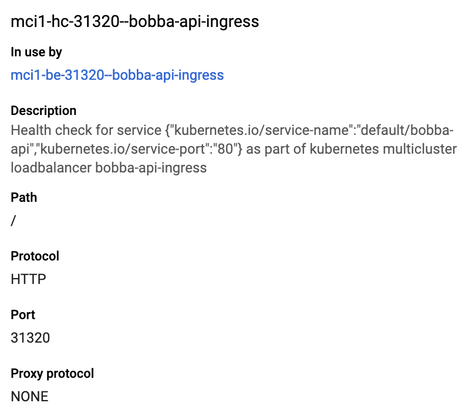
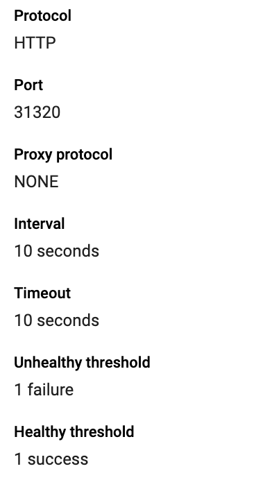

Multiple cluster with Ingress
During these tests we only did our tests with only 1 cluster. However for an application with an important volume of traffic one cluster might not be suitable.
As an example your application is popular in the US and in East asia. Therefore it might be better to create an other cluster in one of those region for better load repartition. This is what we’re going to do today.
Context
For now our application is only deployed in the us with our cluster located in us-central1-a. However as said earlier our app is really popular in Taiwan therefore we’ll create an other cluster to handle that load.
Combine with a LoadBalancer the load balancer will decide how to distribute the traffic.
Creating an other cluster 💾
Let’s create an other cluster. This time we’ll choose a cluster based in the region asia-east1-c which is based in Taiwan. For our cluster set the same settings as we did with the us cluster.
Configuration 🔧
First let’s switch to the context of our new cluster. Run these commands below
# This will add the config of the new cluster to kubectl
gcloud container clusters get-credentials <cluster_name> --zone asia-east1-c --project <project_id>
# Get the context
kubectl config get-contexts
# Choose the context where you find your cluster with an asia-east1-c name and run
kubectl config use-context <cluster>
Before re-deploying we need to re-crete the google cloud credentials need by our database. I’m suggest you to refer to the create cloud proxy sql credentials section
Now that we have recreate our credentials we can redeploy our API by running this command
kubectl create -f gcp/deployment/api.yml
If everything goes fine we can move to Kubemci
Kubemci ⏹️
Kubemci (Kubernetes multicluster ingress) is a Beta CLI tool that help us to configure a load balancer which is using multiple clusters.
This is a beta tool and doesn’t guarantee the fact that the API will change nor if the API is stable.
Firstable you’ll need to download Kubemci. Download Kubemci from Download Kubemci
Now that we have download our Kubemci CLI app we need to make it executable
chmod +x ./kubemci
Ok now let’s check the requirements needed to create our multicluster LoadBalancer
For each Service you are planning to use in the multi-cluster ingress, it must be configured the same across all of the clusters.
As per Google documentations we need to ensure that our service respect these rules
- Same name in every cluster
- Same namespace (default in our case)
- Service of type
NodePort - Use same NodePort in our case
31320
As we didn’t touch our service configuration file we’re already respecting the rules ! How great we are bubble-tea lover !
Get the credentials 💳
In order for Kubemci to work it need to have a credentials of our cluster.
In order to do that create a folder at the root of the project which we’ll be calling mci.
Now let’s get the credentials for our american cluster by running this command
KUBECONFIG=mci/mcikubeconfig gcloud container clusters get-credentials --zone=us-central1-a <cluster_name>
Let’s also do that command for our asian cluster
KUBECONFIG=mci/mcikubeconfig gcloud container clusters get-credentials --zone=asia-east1-c <cluster_name>
If everything go right you should have a file name mcikubeconfig in the mci folder which should look like that
apiVersion: v1
clusters:
- cluster:
certificate-authority-data: <cert>
server: <ip>
name: <cluster name either asia or us>
- cluster:
certificate-authority-data: <cert>
server: <ip>
name: <cluster name either asia or us>
contexts:
- context:
cluster: <cluster name either asia or us>
user: <cluster name either asia or us>
name: <cluster name either asia or us>
- context:
cluster: <cluster name either asia or us>
user: <cluster name either asia or us>
name: <cluster name either asia or us>
current-context: <cluster name either asia or us>
kind: Config
preferences: {}
users:
- name: <a name>
user:
auth-provider:
config:
access-token: token
cmd-args: config config-helper --format=json
cmd-path: <path to gcloud bin>
expiry: 2019-02-27T16:41:16Z
expiry-key: '{.credential.token_expiry}'
token-key: '{.credential.access_token}'
name: gcp
- name: <a name>
user:
auth-provider:
config:
access-token: token
cmd-args: config config-helper --format=json
cmd-path: <path to gcloud bin>
expiry: 2019-02-27T16:41:16Z
expiry-key: '{.credential.token_expiry}'
token-key: '{.credential.access_token}'
name: gcp
Ok now let’s move on to Ingress
Configure our Ingress
Configuring an Ingress resources required a static IP. Good thing to know we have already generated our IP for our previous ingress.
Firstable delete our current ingress on the first cluster
kubectl config use-context <us_cluster>
Then run
kubectl delete ingress bobba-api-ingress
Your ingress should have been deleted (go to the LoadBalancer section of GCP for further checks). Ok we’re fully ready for configuring our new ingress.
The new Ingress configuration won’t differ that much. It’s available in the folder gcp/ingress/mci_balancing.yml. Let’s describe it
apiVersion: extensions/v1beta1
kind: Ingress
metadata:
name: bobba-api-ingress
annotations:
# Reference to our static IP address
kubernetes.io/ingress.global-static-ip-name: bobba-api-ip
# Enable the multi cluster
kubernetes.io/ingress.class: gce-multi-cluster
spec:
backend:
# Name of our api service
serviceName: bobba-api
# Port to expose by the LoadBalancer
servicePort: 80
As you can see the configuration doesn’t differ that much from the original Ingress LoadBalancer there’s only a slight change. Ok, let’s deploy our Ingress ressources
./kubemci create <name of ingress / bobba-api-ingress> --ingress=kubernetes-docker-lab/gcp/ingress/mci_balancing.yml --gcp-project=<project_id> --kubeconfig=kubernetes-docker-lab/mci/mcikubeconfig
Once you run this command you’ll see a lot of log with a final Log with a final log which should be Success..
Now let’s check our Ingress with this command
./kubemci list --gcp-project=<project_id>
You should have an output like so
NAME IP CLUSTERS
bobba-api-ingress <staticIP> <cluster asia or us>, <cluster asia or us>,
Healthcheck ✔️
We have configure our Ingress ressources and it’s working properly. However we need to do one more thing. Configure the healthcheck of our Ingress. Indeed for the moment our Ingress will check the services by default should check the health of our pods every 30 seconds with a delay of 30 seconds with a limit of trial of 3 times. Which mean that after 3 attempt the services will be considered as unhealthy.
In order to accelerate this (because our app is highly use). We need to set a lower healthcheck timeout.
Go to the Compute engines > Healthcheck section and select our Ingress ressources mci-...-bobba-api-ingress. Your page should look like this

Now let’s edit it. Click on the button Edit and update the Health criteria with the following parameters:
- Check interval: 10 (every 10 seconds a health check is send)
- Timeout interval: 10 (wait 10s before k8s consider the request as a failure)
- Unhealthy thresold: 1 (Maximum number of failure before considering the instance unhealthy)
Once you finish click on the Save button. You should get an output like so

Now when your user will visit your web app from asia the LoadBalancer will redirect the traffic to the asia-east1-c. When the service will be unaccessible the Loadbalancer will re-route the request to the other cluster.
Et voilà our web app could handle traffic coming from asia and the us ! so nice :).
Note: This feature is also supported by Regional Cluster.